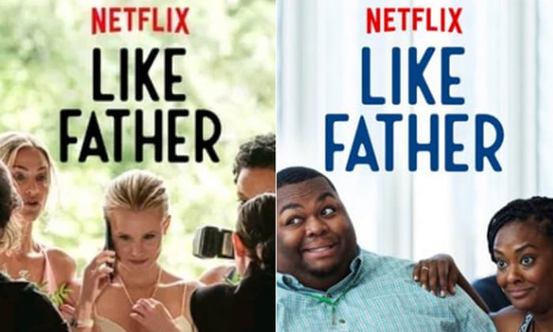

Spotify:
There are risks when it comes to using AI and especially with Spotify, it can be scary at times because when signing up to Spotify, you will need to enter your full name, address, email and credit card information and these are most likely stored in their database system and it could be used against you without your knowledge.Some users think of it as personal information thieving which is considered a privacy violation(s).
Although these aren’t proven, it may be a risk for some users if they don’t trust the AI system which we do not blame you for but generally speaking, Spotify only collects data through your use of the Spotify Service, which is a basically the AI function (collects data about your music taste and habits) of Spotify. It is at your own risk if you want to use their application and pay for monthly subscriptions.
Netflix:
Netflix is relying on machine learning to create a more enjoyable experience for its subscribers. While companies invest largely in their unique recommendation engine, issues are arising about how far a machine learning algorithm should ideally go in terms of user profiling. Some issues can include personal privacy violations; information stolen and much more beyond that. Another issue that isn’t talked about too heavily is about Netflix’s racial bias. Netflix has access to enough information about it’s subscribers’ watching habits and other activities. Netflix appears to be targeting their subscribers with material based on race using this information. An example of this is when a debate started after Stacia Brown (african-american female) tweeted on twitter about how she was shown a thumbnail of two black characters in a movie that only had about 10 minutes of screen time but the actual movie itself starred 2 protagonists; Kristen Bell and Kelsey Grammer; Netflix issued a statement about this, telling the people that the company doesn’t track any demographic data about their subscribers. In other words, Netflix wants to keep you in the scene and doesn’t want you to leave, but questions about racial profiling is something that Netflix is trying to dodge. Whether Netflix’s profiling was intentional or not, it might be that their algorithm is going sideways.
Netflix Racial Bias Example:
 Made 6th June 2021